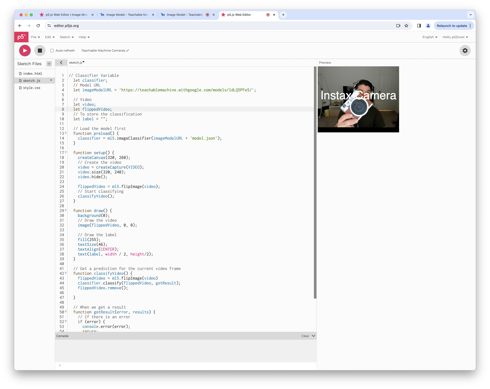

Process
Problems that I Encountered
I didn't come across any problems! Whew! I used the Youtube video in the module resources and it helped a lot with understanding the nuances. Check it out here! Here is the p5.js approach I took to having fun with this exercise.
Link to p5.js Editor CodeRecognizing "Nothing" in the Image Model
Recognizing "Instax Camera" in the Image Model
Recognizing "Polaroid Camera" in the Image Model